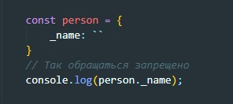
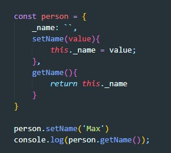

Инкапсуляция - сокрытие деталей (свойств, методов)
Абстракция - отделение концепции от ее экземпляра
Полиморфизм — реализация задач одной и той же идеи разными способами
1 Договоренность не использовать некоторые свойства объекта напрямую. Такие свойства принято нзывать (именовать) через нижнее подчеркивание. Пример
C такими свойствами лучше взаимодействовать либо через геттеры и сеттеры, либо через методы. Пример:
